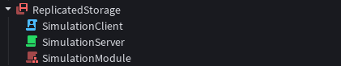

Working with Server Authority
Roblox has created certain Workspace properties that you can configure to enable all or certain parts of Server Authority. They are listed below.
Workspace > UseFixedSimulation: Enables/DisablesRunService:BindToSimulation().Workspace > PlayerScriptsUseInputActionSystem: Updates the built in Player scripts to a new model where they live underStarterPlayer, use the Input Action System, and allow the Server to process player inputs.Workspace > NextGenerationReplication: Enables/Disables a new replication system that alters and improves how properties are replicated under the hood. Note that this system is fully disconnected from remote events so you should not rely on the ordering of property replication and remote events.Workspace > Server Authority > AuthorityMode: Allows you to set the authority mode of the place.
Warning
Setting the AuthorityMode to Server will automatically enable all of the properties above, and change certain other workspace properties. Below is a list of all properties that will be changed.
Workspace > StreamingEnabled:EnabledWorkspace > SignalBehavior:DeferredWorkspace > Behavior > PhysicsSteppingMethod:FixedWorkspace > UseFixedSimulation:EnabledWorkspace > PlayerScriptsUseInputActionSystem:EnabledWorkspace > NextGenerationReplication:Enabled
These properties cannot be changed while the AuthorityMode is set to Server.
After configuring the properties above, Server Authority should now be ready for usage.
If you wish to simply enable Server Authority for your characters and parts in your game, and you do not have systems dependant on how these characters and parts behave on your world, then these are all you need to do. The default PlayerModule instance already handles how Server Authority will be used internally, so you generally don't need to do anything.
However, if you have systems dependant on how these characters and parts will behave on your world, or simply wish to understand and work with the system, then you may continue reading.
RunService
To begin working with Server Authority, there are a few new methods in RunService you need to utilize.
Methods
RunService:BindToSimulation(function: (deltaTime: number) -> (), frequency: Enum.StepFrequency?)
This method allows you to bind a function to the simulation with a certain amount of frequency. Depending on the frequency, this function will be called with a deltaTime argument. If a frequency argument has not been provided, then it will default to Enum.StepFrequency.Hz60. This is the right place to put your core game logic, including processing input and updating your synchronized game data.
RunService:SetPredictionMode(context: Instance, mode: Enum.PredictionMode)
Determines whether the engine will rollback and resimulate the context Instance.
-
If
modeisEnum.PredictionMode.Off: Disables rollback and resimulation for the Instance. When a place'sWorkspace.AuthorityModeis set toServer, theInstancewill be owned by the server with no client-side prediction. -
If
modeisEnum.PredictionMode.Automatic(default value): Allows the engine to determine whether to rollback and resimulate theInstance. ForInstances that derive fromBasePart, the engine uses the player’s simulation radius to determine if anInstanceshould be predicted. This helps limit expensive client-side prediction to only the relevantInstances. At the moment, Non-BaseParts will not rollback when set toAutomatic. -
If
modeisEnum.PredictionMode.On: Will ensure theInstanceis always rolled back when a misprediction occurs. ForInstances critical to your experience, use this setting. Otherwise, do not overuseOnforInstances, as it’ll have significant performance implications for low-end devices.
RunService:GetPredictionStatus(context: Instance): Enum.PredictionStatus
This function allows you to check the prediction status of the context Instance. This may be essential for scripts affecting multiple instances (e.g., vehicle controllers, custom physics) where some might be predicted and other might not. It may also be useful for debugging and observing the effects of automatic prediction.
Obtaining the Current Frame
When Server Authority is enabled, the global time() function becomes synchronized with the rollback netcode model. Calling this function will return a value that determines the current frame number of the world. It is also rolled back on the client when a misprediction occurs. Printing this number can be helpful for debugging your systems.
Attributes
Attributes on predicted Instances are fully synchronized with the rollback netcode model. This means that on the client, attributes are compared against the Server's version and mismatches will cause a full rollback and resimulation. You can use this to store game data that affects your core simulation and gameplay, e.g., scores, health, ammunition, etc.
Note
For Non-BasePart Instances, you must set the Instance's PredictionMode to Enum.PredictionMode.On to have it be fully synchronized.
Although attributes are fully synchronized with the rollback netcode model, to ensure efficient data synchronization and the best gameplay experience, Roblox has imposed certain limits on the number and size of attributes that can be set per Instance on the Server. Attempting to exceed these limits will result in an error. While you can still set attributes in the Studio UI, any that violate these limits will not be loaded.
Attribute Limits Per Instance (Server-side):
- Maximum of 64 Entries.
- Names and string values must be < 50 characters long.
- Maximum of 1KB total data size.
Debugging and Tooling
Press CTRL + SHIFT + F6 on Windows or CMD + SHIFT + F6 on macOS to enable the Server Authority Visualizer. When it’s on, you’ll see a new debug pane appear at the bottom-right of your viewport. Along with showing statistics about Server Authority, this tool shows PV mispredictions for all predicted Instances in the workspace. Pairs of boxes connected by pink lines show mispredictions: for each pair, the blue box represents the client’s misprediction and the green box represents the server’s authoritative simulation. Each box emits a vector representing the CFrame's facing direction at the given location. You can clear the mispredictions from the world with CTRL/CMD + SHIFT + F7 and sort them by proximity to the player with CTRL/CMD + SHIFT + F8.
Implementing Systems with Server Authority
Server Authority requires you to run the same simulation code on both the Server and the Client. This is necessary for accuracy.
We can implement this simulation code in many ways, however, to make it easier and more efficient to implement such a system, a multi-script architecture will be used for implementation in this documentation.
We will use this architecture to initialize the same system on both the Server and the Client. To do this, you can create a ModuleScript which is parented to a location that is accessible from both the Server and the Client, such as ReplicatedStorage. Then, by creating a Script for both the Server and Client contexts, we can initialize and run this shared ModuleScript on each context.
An example:

We have two scripts which initialize the "SimulationModule" ModuleScript on both the Server and the Client.
SimulationClient and SimulationServer
SimulationModule
local module = {}
function module.Run()
-- This code will be ran on both the server and the client.
end
return module
This simple architecture will be the foundation of our many systems that will run on the server-authoritative model. Using this, we can implement many types of systems, such as a character movement system, which can be found in the Examples section.